Benchmark / Use cases / Cloud mask / Results
Cloud mask
Does compression change where Clouds Decoded finds clouds?
How it is measured
cloud_iou is the intersection over union of the cloud mask from the compressed copy and the one from the original. It is 1 when the two masks agree.
Compression
GeoZL PIVCO, GeoZL PFOR and JPEG XL compress the 10, 20 and 60 m bands as three stacks. The root-mean-square error limit doubles from 5 to 80 DN. The GeoZL recipes (geozl-med-pivco and geozl-planar-pfor) use the same lossy quantiser. They decode to identical arrays but differ in compressed size. JPEG XL searches for a distance within the limit and stores a stack losslessly if none fits.
georvq s2-v1 codes the 13 bands of each 36 pixel window together with learned codebooks, at nine levels from 8-8 to 8-0. It has no error limit, so its rows report the error reached.
Compression ratio and cloud mask
Each point is one level of a codec, named when you point at it, at the compression ratio over all the samples of the panel and the median of the metric. GeoZL and JPEG XL levels are root-mean-square error limits in DN, and georvq levels are its rungs.
Samples
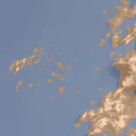
T44PNB-20210704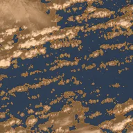
T44PNB-20200106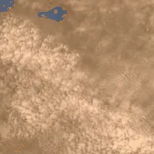
T44PNB-20210719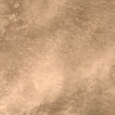
T44PNB-20171028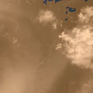
T44PNB-20181117T44PNB-20230828T44PNB-20210828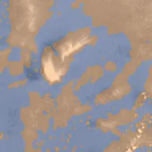
T44PNB-20260429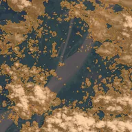
T20MQB-20200510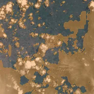
T36NVF-20190510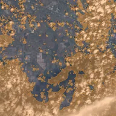
T15RTN-20200216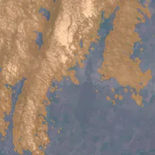
T35TMK-20230306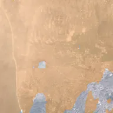
T11SMS-20170203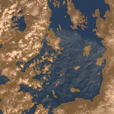
T36SVD-20170104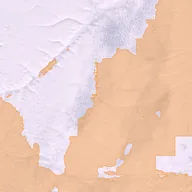
T05WPT-20190419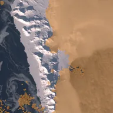
T33XVH-20200412